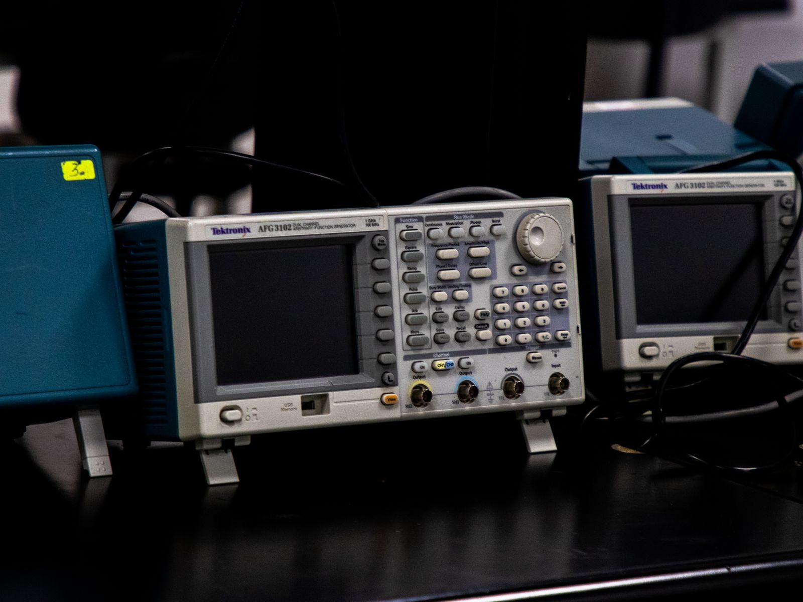

What an FAI is for
A first article inspection verifies that the manufacturing process produces a part that matches the drawing, before volume production starts. It checks the process, not just the part: a single good part made by an uncontrolled process proves very little.
That is why FAI reports dimensions against the drawing with the measured values recorded, and why the report should be tied to a specific drawing revision and a specific process setup.

What should be in the report
A useful FAI report identifies the part and revision, lists every dimension and feature with nominal, tolerance and measured value, states the instruments used, and records the material and its certificate. Measurements taken against the CAD model should say so.
Reports that list only a pass or fail per feature without the measured values are far less useful. The values are what let you see how much margin exists - a feature that passed with 20% of its band remaining is in a different position from one that passed with 2%.
What to send with the order
Send the model, the drawing with datums and tolerances, the material specification, the finish specification and a note of which dimensions are functionally critical. The critical list is what tells the inspector where to concentrate.
If a customer's own quality system requires a specific FAI format - ballooned drawing, AS9102 style or a company template - sending it with the order avoids rework. Reformatting a report afterwards costs more than stating the format upfront.
How to read a report when something misses
A dimension that measures out of tolerance should be reported with its measured value before shipment, together with a proposed disposition: rework, use as-is with a concession, or remake. That is a decision for the customer, not the supplier.
The most useful response is to ask why it missed. A single marginal feature often points at a setup or a fixture that can be corrected; a pattern of drift across several features points at a process that needs changing before the next batch runs.
Where FAI fits in a production route
FAI is normally run on the first part of a new job, and repeated when the design revision, the process, the material or the supplier changes. That keeps it meaningful rather than ceremonial.
For ongoing production, FAI is supplemented by first-off checks at each run and by periodic sampling. The combination is what makes a stable process visible - FAI proves the process once, sampling proves it is still the same process.

Ballooning the drawing
A first article inspection starts with ballooning: every dimension, tolerance and note on the drawing is numbered, and those numbers become the rows of the report. Ballooning is what guarantees the inspection is complete rather than selective, because it forces the inspector to account for every callout instead of the interesting ones.
The ballooned drawing is also the most useful document to keep. When a customer later asks whether a specific feature was ever verified, the balloon number is the index that answers the question. Without it, the report and the drawing cannot be reconciled feature by feature.
Which instrument proves which dimension
Different dimensions need different evidence. Outside dimensions are measured with a micrometer; internal ones with a bore gauge, a plug gauge or an internal micrometer depending on size and tolerance; depths with a depth gauge; geometric callouts with a coordinate measuring machine or, for simple cases, with a height gauge on a surface plate. Surface finish needs a profilometer, not a visual judgement.
This matters because the instrument sets the uncertainty, and the uncertainty has to be comfortably smaller than the tolerance it is checking. Measuring a +/- 0.02 mm bore with a tool whose own uncertainty is +/- 0.01 mm leaves no room to distinguish a good part from a marginal one. A report that names the instrument is telling you whether the measurement is trustworthy.
Nominal, tolerance, actual
The columns that make a report readable are nominal, the tolerance limits, the actual measured value and the resulting margin. A pass/fail column alone hides the information that matters: a feature that passed with a fifth of its band remaining is in a very different position from one that passed with almost nothing left.
Margin is what tells you how the process is behaving and how much room exists before it drifts out. Where a critical feature sits consistently near a limit, that is a signal to adjust the setup, not a reason to celebrate a passing report.
What to send with the order
Send the model, the drawing with datums and tolerances, the material specification, the finish specification, and a list of the dimensions that are functionally critical. The critical list is what tells the inspector where to concentrate effort when a measurement is difficult or when the reporting format has to be prioritised.
If a specific format is required - a ballooned report, an AS9102 style layout or a company template - send it with the order. Reformatted reports cost more than the format would have, and the reformatting frequently loses the measured values that made the original useful.
FAI is not the only gate
First article inspection proves the process once. It is supplemented in production by first-off checks at the start of each run, in-process checks where a feature is prone to drift, and periodic sampling that demonstrates the process is still the same one that was validated. Each of these answers a different question.
It is also worth separating levels of rigour from the outset. An AS9102 first article for an aerospace part and a first article for an industrial bracket are different documents serving different risks. Agreeing which level applies before the job starts prevents a report that is either over-built for a simple part or under-built for a critical one.
Running FAI with a new supplier
The first article is the cheapest opportunity to discover that a supplier has understood the drawing differently from you. Expect the report to come with questions, and treat the questions as evidence of engagement rather than as a problem.
Repeat the FAI when the drawing revision, the material, the process, the machine or the supplier changes. Those are the events that can move a result without anyone noticing, and they are exactly the situations the first article exists for. A repeat on an unchanged job, by contrast, proves nothing new.
The critical-feature list is the point
An FAI report covering every feature equally is thorough but blunt. The document that actually drives quality is the short list of dimensions whose failure would matter: the bore that sets a bearing fit, the face that seals, the pattern that locates. Marking those on the drawing tells the inspector where to spend measurement time when the budget is finite.
It also sets the disposition logic in advance. When a critical feature is marginal, the decision to rework, concede or remake is a customer decision made with the measured values in hand. Without a critical-feature list, every dimension looks equally important and every marginal result triggers the same conversation.
Record retention and traceability
The inspection record is worth keeping for as long as the part could be in service. A report tied to a drawing revision, a material certificate number and a process setup is what allows a later question - was this batch within tolerance, and on which revision - to be answered from paper rather than from memory.
Traceability is the reason material certificates and heat-lot numbers belong in the same file as the dimensional report. A dimension can be re-measured from a surviving part; the grade and heat treatment of the metal cannot. Keeping both together is what makes the record complete.
Mistakes that make a report useless
The common failures are familiar. A report that records pass or fail without measured values cannot be interpreted later. A report measured against a superseded drawing cannot be trusted. A report that names no instruments cannot be assessed for uncertainty. And a report where every dimension sits exactly at nominal is usually a transcription exercise rather than a measurement.
The last one is worth stating plainly: real measurements scatter. A report in which dozens of features land on nominal to two decimal places is describing what the drawing says, not what the machine produced, and it tells you the inspection did not really happen.
Frequently asked
How long does a first article inspection take?
It depends on how many features have to be measured and whether a coordinate measuring machine is needed. A simple part can be reported the same day; a complex part with many three-dimensional features takes longer, and the time is normally included in the lead time rather than added at the end.
Is FAI needed for repeat orders?
Not for an unchanged repeat. It should be repeated when the drawing revision, material, process, machine or supplier changes, because those are the events that can shift the result without anyone noticing.
What if a first article fails?
The measured values are reported, the cause is identified and the part is either reworked or remade before production starts. Finding the problem at first article is the cheapest possible outcome - the alternative is discovering it after a production batch.